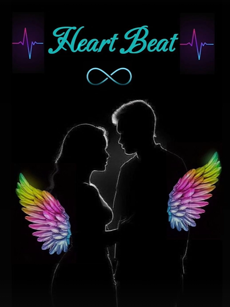

HEART BEAT
LET'S DIVE INTO THE BEAUTY OF TAMIL POEMS

EPISODE 1
இளமாலை நேரம் இளவேனிற் காலம்
தென்றலும் மெல்லிய இசையாய் தீண்ட
மரங்களின் நடன ஆர்ப்பாட்டம் மழையின் மண் வாசனையோடு !!!
மனதை பறிக்கும் அந்த நிமிடம் அவளின் மனமும் தொலைந்தே போகும் என அறியவில்லை !!!
அவனின் எதிர்பாராத சந்திப்புகள்
தொடரும் பொழுது ..
சந்தையில் கூச்சலிடும் அத்தனை சத்தங்களுக்கிடையே
அவளின் கால் கொலுசின் சத்தம் மட்டும் அவனுக்கு கணீர் என்று ஒலித்தது !!..
சிறு குழந்தையாக இருக்குமோ என அவனும் எண்ணிக்கொண்டே திரும்பும் வேளையில் சட்டென்று மிதித்தான் அக்கொலுசொலியின் கால்களை
குழந்தை அல்ல பெண் பதுமை என அறிந்த அவனும் பட்டென்று தலை குனிந்தான் !!!
கூட்டநெரிசலை கண்டு வராத கூச்சம்
அவளை கண்டதும் வெட்கமாய் புன்னகையில் எதிரொலித்தது...
அவளும் அவனை பட படவென்று திட்டிமுடித்தாள்.
அவன் மனதில் காதல் முடிச்சை இட்டு சென்றால் ...
இனி அவளை காண்போமா என காதல் கனவில் அவன் !!
கவலையோடு ....
-தென்றல் பிரசாத்🩵